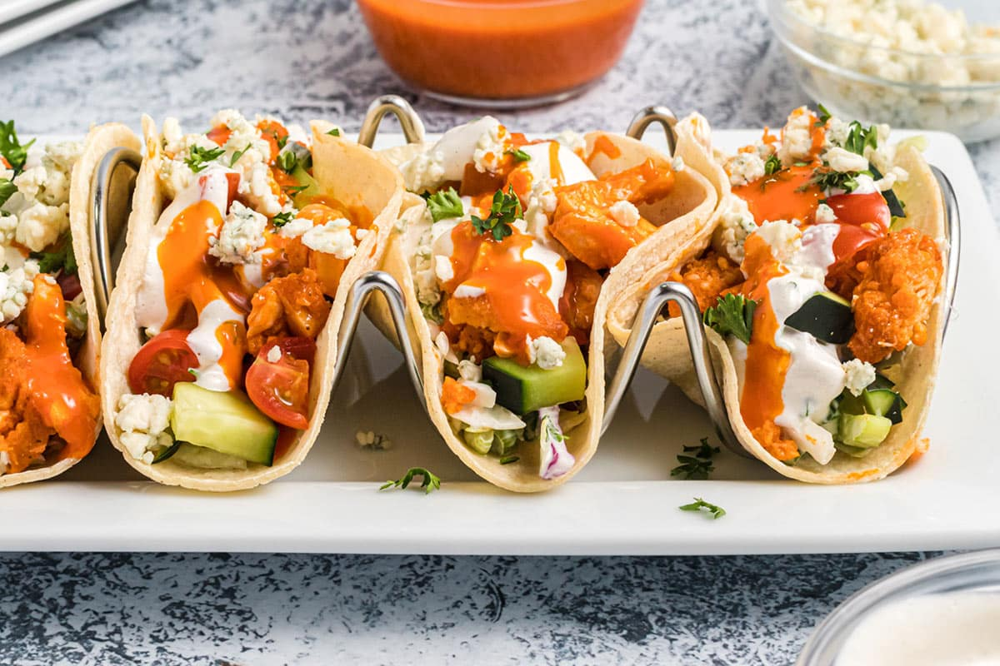

Buffalo Chicken Tacos
Description
Delicious and nutritious meal perfect for lunch or a quick snack. Free to build on the flavor profile with lettuce,tomatoes, cilantro, or garnish of choice.
Ingredients
- 4 ounces grilled chicken, chopped
- ½ teaspoon chili powder
- ½ teaspoon ground cumin
- -½ teaspoon garlic powder
- -3 white corn taco shells
- ¼ cup hot Buffalo wing sauce (such as Frank's® REDHOT Buffalo Wing Sauce)
- ¼ cup ranch for dipping
Steps
- Place chicken in a bowl and season with chili powder, cumin, and garlic powder.
- Spoon chicken into taco shells.
- Pour Buffalo wing sauce over seasoned chicken and top with ranch dressing.